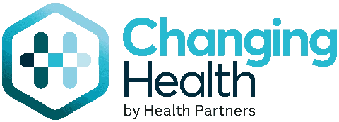

Alreet!
I’m Andrew Taws
A Lead UX Product Designer based in Newcastle, currently creating experiences at Recite Me. With 10 years of experience creating innovative and accessible products.
A very particular set of skills
I have hands-on experience in:
- Accessibility audits: identifying and resolving barriers to the WCAG 2.2 AA standard.
- User research and interviews: turning real user pain points into design decisions.
- User flows and wireframing: structuring intuitive journeys before a single pixel is placed.
- High-fidelity prototyping: interactive, dev-ready designs that hold up under scrutiny.
- Design systems: building consistency and speed into product teams.
Work experience
-
Lead UX Product Designer
I joined Recite Me in 2021 as Lead UX Product Designer, where I design across the company’s suite of digital accessibility products, with a particular focus on the Recite Me Accessibility Checker, which lets users test any website URL and receive an accessibility score alongside practical advice on how to improve it.
My work spans the full design process: user flows, sitemaps, design systems, and high-fidelity UI for new features, all built around WCAG 2.2 Level AA, a standard we’re proud to lead by example on. I back this up with regular UX audits and hands-on user research, including interviews and usability testing, to make sure our products genuinely work for the people using them.
I regularly join client calls to understand the issues they’re facing with the product, then translate those insights into design solutions and work closely with the product team to get them implemented. I also run cross-department sessions with developers and QA, walking through Figma prototypes to make sure what we design meets both user needs and technical requirements.
-

Digital Product Architect
Promoted from Junior Designer, I worked alongside the Head of Product to help construct healthcare educational programmes on the Changing Health platform for both internal teams and external partners.
My responsibilities included:
- Building out programmes on the Changing Health platform for internal and external partners
- Creating data flows and user flow documentation to map how users moved through each programme
- Producing visual mockups and interactive prototypes for proposed UX/UI solutions, including high-fidelity designs used in usability testing
- Informing UX reviews and scoping new platform functionality based on review feedback
I also contributed to Healthy Living, an NHS programme supporting people to monitor and manage Type 2 Diabetes, and one of the largest programmes of its kind. This included taking part in user interviews that gave the team vital insight into how people track their condition and where they look for information, as well as supporting usability testing to identify friction points early. Placing the person at the centre of every decision was something I learned here: not just as a requirement, but as the right way to work.
This stage of my career deepened my focus on user-centred design at scale, and remains some of the most rewarding work I’ve done.
-
Junior Designer
My first full-time design role, working alongside the Head of Design across both print and digital. I helped design and prototype new features for the Changing Health app, alongside creating promotional material and documentation for the wider business.